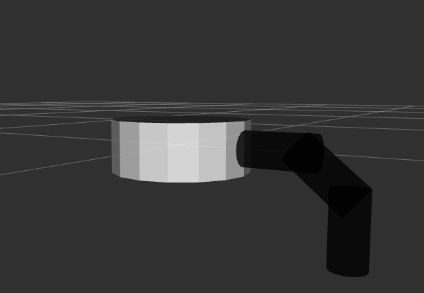
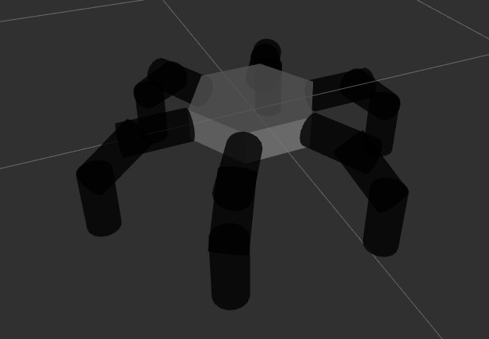
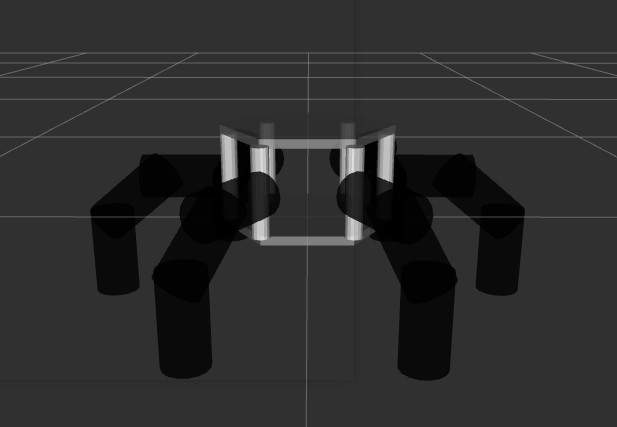
6-legged spider robotfavorite
ณ ปัจจุบัน ดิฉันจบการศึกษาจากมหาวิทยาลัยศิลปากรวิทยาเขตพระราชวังสนามจันทร์
คณะวิศวกรรมศาสตร์และเทคโนโลยีอุตสาหกรรม
สำหรับ
URDF
(Unified Robot Description Format) คือ รูปแบบไฟล์ XML
ที่ใช้สำหรับการจำลองโมเดลหุ่นยนต์ขึ้นมาเพื่ออธิบายลักษณะกายภาพของตัวโมเดลไม่ว่าจะเป็น สี พื้นผิว ตำแหน่ง
โดยจะมีการเชื่อมต่อส่วนประกอบต่างๆโดยใช้ Link และ Joint
สำหรับ
Particle Swarm Optimization (PSO)
เป็นอัลกอริทึมการหาค่าเหมาะสมที่สุดที่ได้รับแรงบันดาลใจมาจากพฤติกรรมทางธรรมชาติของสัตว์ที่อยู่อาศัยเป็นฝูง
โดยดิฉันได้ทำการสร้างแบบจำลองของ
หุ่นยนต์แมลง 6 ขาขึ้นมา และเรียนรู้วิธีการขยับขาตามต้นแแบบจริง ซึ่งดิฉันทำโดยการจำลองโมเดลบน Rviz
ส่วนประกอบโมเดลหุ่นยนต์แมลง 6 ขา
โมเดลหุ่นยนต์แมลง 6 ขา จากขา 1 ข้าง (ฐานหกเหลี่ยม)grade
base_link (ฐานเป็นรูปหกเหลี่ยม)
1_leg (ส่วนประกอบขาที่ 1 ตำแหน่งบนติดกับตัวฐาน)
2_leg (ส่วนประกอบขาที่่ 1 ตำแหน่งขาตรงกลาง)
3_leg (ส่วนประกอบขาที่่ 1 ตำแหน่งขาล่างสุดติดกับพื้น)
base_joint (ข้อต่อตัวฐาน)
base_2_joint (ข้อต่อตำแหน่งที่ 1-2)
base_3_joint (ข้อต่อตำแหน่งที่ 2-3)
โมเดลหุ่นยนต์แมลง 6 ขาจากขา 1 ข้างfavorite
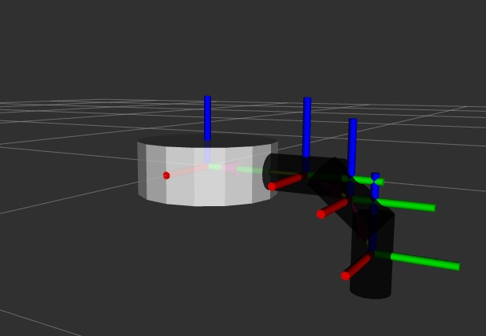
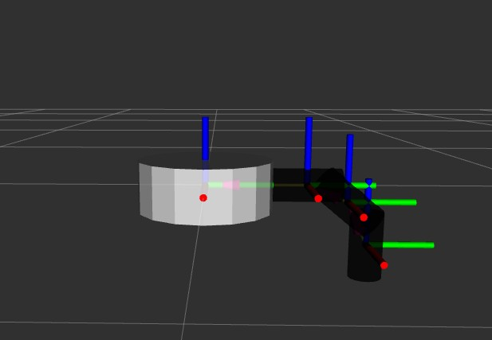
สำหรับโมเดลหุ่นยนต์แมลง 6 ขา โดยเริ่มศึกษาจาก 1 ขาก่อนพบว่า
การขยับของส่วนประกอบขานั้นไม่เหมือนกันในการเคลื่อนที่
ส่วนประกอบตำแหน่งที่ 2 และ 3
โมเดลหุ่นยนต์แมลง 6 ขา (ฐานหกเหลี่ยม)favorite
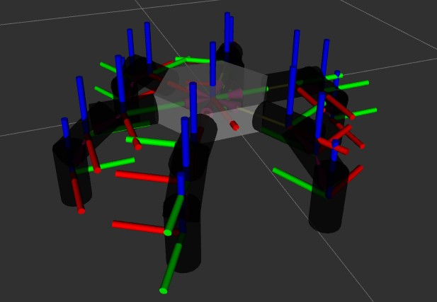
ตัวอย่างขาที่ 1 สำหรับการหมุน
ส่วนประกอบตำแหน่งที่ 2 และ 3
โมเดลหุ่นยนต์แมงมุม 6 ขา (ฐานหกเหลี่ยมตามต้นแบบจริง)favorite
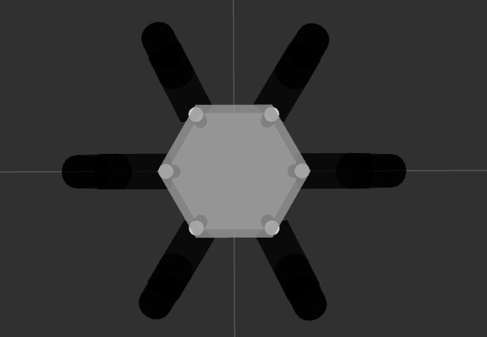
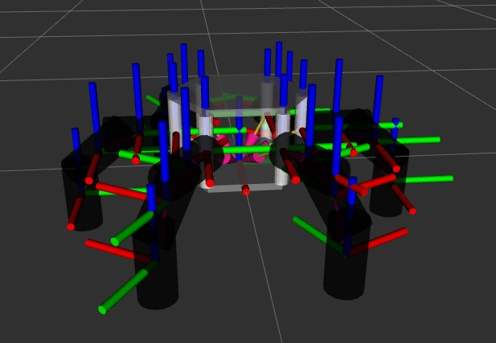
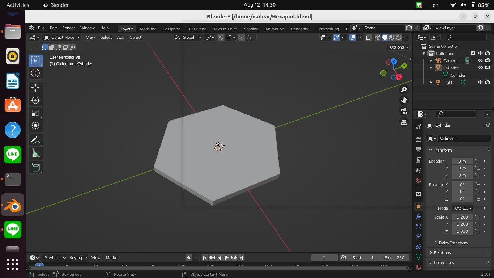
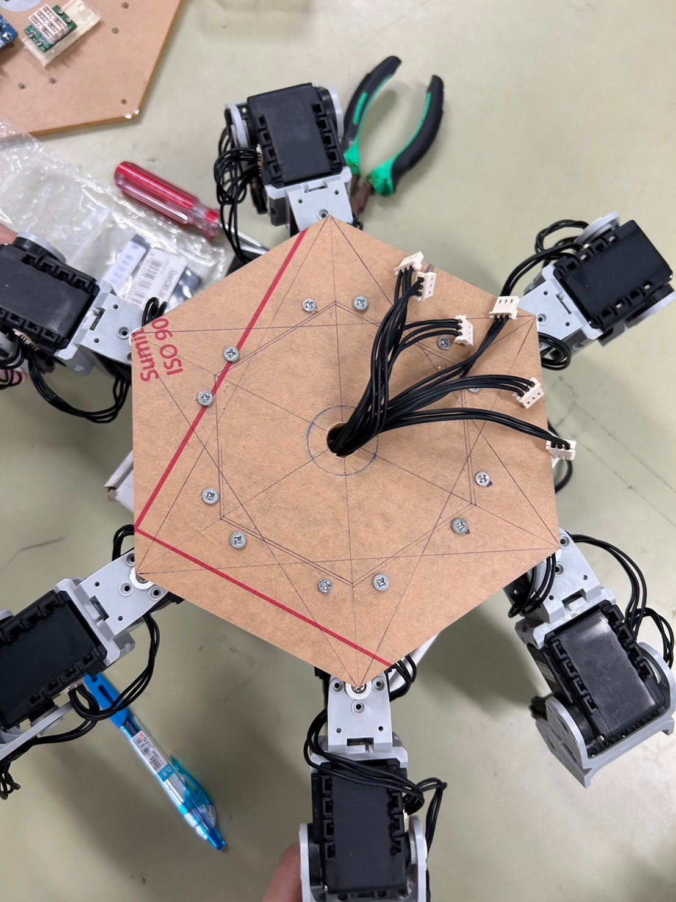
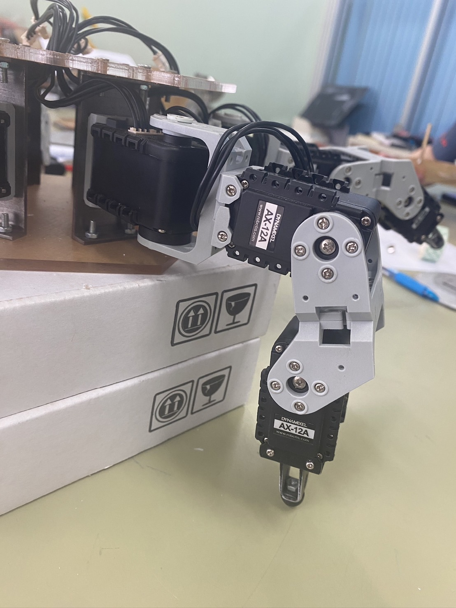
สำหรับโมเดลแมงมุมหุ่นยนต์ 6 ขาฐานหกเหลี่ยมตามต้นแบบ สิ่งที่เพิ่มเข้ามาคือการเพิ่มฐานหกเหลี่ยมเข้ามา 1
อันโดยจำลองด้วยโปรแกรม Blender และส่งออกเป็นไฟล์ urdf
ตัวอย่างขาที่ 1 สำหรับการหมุน
ส่วนประกอบตำแหน่งที่ 1
หมุนตามแกน Z (ยึดติดกับขาทรงบอก)
ส่วนประกอบตำแหน่งที่ 2 และ 3
ภาพรวมของโครงงานและหุ่นยนต์ที่ใช้สำหรับการจำลองfavorite
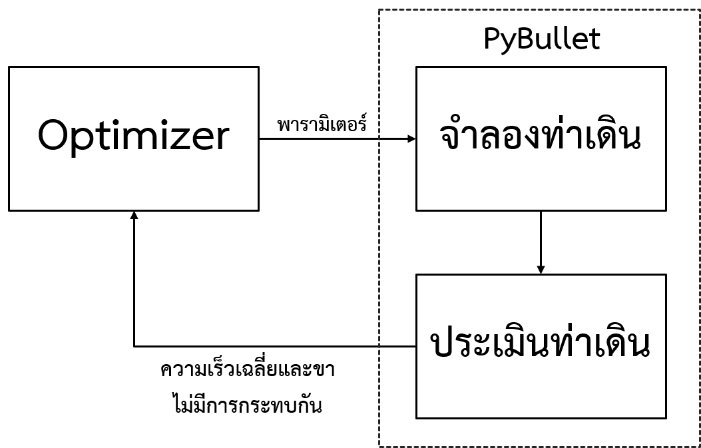
และเมื่อสร้างโมเดลหุ่นยนต์แมลง 6 ขา เรียบร้อยแล้ว เราจะนำมาทำการจำลองผ่านโปรแกรม Pybullet
ซึ่งเป็นโปรแกรมการจำลองเชิงกายภาพแบบเรียลไทม์
หุ่นยนต์แมลง 6 ขา ที่ใช้สำหรับการจำลอง
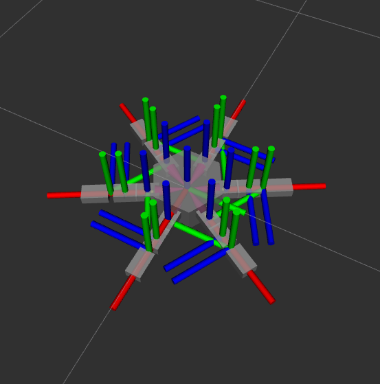
ผลของการจำลองfavorite
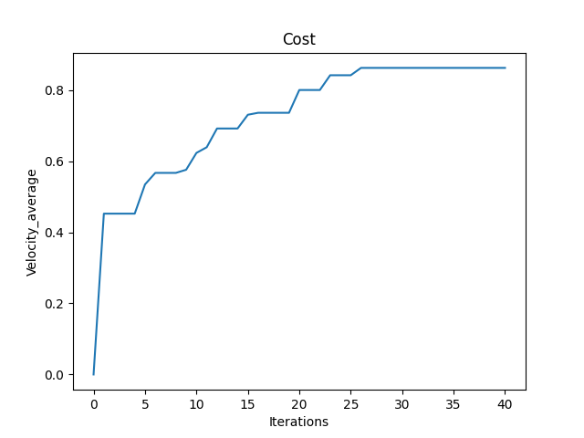
จากการจำลองของหุ่นยนต์จะพบว่าหุ่นยนต์สามารถเดินได้ไวและขาไม่ชนกันเนื่อจากการปรับค่าของการใช้ PSO